| Symbol |
Description |
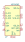
ADP5063 | Description: Linear LiFePO4 Battery Charger with Power Path and USB Compatibility, LFCSP
Keys: LiFePo4 Battery USB PMIC
Datasheet: https://www.analog.com/media/en/technical-documentation/data-sheets/ADP5063.pdf |
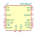
ADP5090ACP | Description: Ultralow Power Boost Regulator with MPPT and Charge Management, LFCSP-16
Keys: boost regulator MPPT charge
Datasheet: https://www.analog.com/media/en/technical-documentation/data-sheets/ADP5090.pdf |
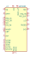
ADP5091 | Description: Ultralow Power Energy Harvester PMUs with MPPT and Charge Management, LFCSP-24
Keys: energy harvester
Datasheet: https://www.analog.com/media/en/technical-documentation/data-sheets/ADP5091-5092.pdf |
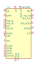
ADP5092 | Description: Ultralow Power Energy Harvester PMUs with MPPT and Charge Management, LFCSP-24
Keys: energy harvester
Datasheet: https://www.analog.com/media/en/technical-documentation/data-sheets/ADP5091-5092.pdf |
AP9101CK | Description: Li+ Battery Protection IC for Single Cell Pack, SOT-23-5
Keys: battery protection li-ion li-po
Datasheet: https://www.diodes.com/assets/Datasheets/AP9101C.pdf |
AP9101CK6 | Description: Li+ Battery Protection IC for Single Cell Pack, SOT-23-6
Keys: battery protection li-ion li-po
Datasheet: https://www.diodes.com/assets/Datasheets/AP9101C.pdf |
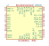
AS8506C | Description: Stackable cell monitor, cell balancer, 3-7 Cells, SPI Interface
Keys: battery balance lithium charge afe
Datasheet: http://ams.com/eng/content/download/476603/1402377/252935 |
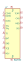
BQ2003 | Description: Standalone switchmode NiCd/NiMH battery charger, 2-4 cells, negative dV and dT/dt termination
Keys: battery nickel cadmium metal hydride
Datasheet: http://www.ti.com/lit/ds/symlink/bq2003.pdf |
BQ24004 | Description: 2-Cell Li-Ion Charge Management IC, HTSSOP-20
Keys: 2-Cell Li-Ion Charge
Datasheet: http://www.ti.com/lit/ds/symlink/bq24006.pdf |
BQ24005 | Description: 2-Cell Li-Ion Charge Management IC, HTSSOP-20
Keys: 2-Cell Li-Ion Charge
Datasheet: http://www.ti.com/lit/ds/symlink/bq24006.pdf |
BQ24006 | Description: 2-Cell Li-Ion Charge Management IC, HTSSOP-20
Keys: 2-Cell Li-Ion Charge
Datasheet: http://www.ti.com/lit/ds/symlink/bq24006.pdf |
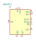
BQ24012 | Description: Single-Chip Li-Ion Charge Management IC, DFN-10
Keys: Batter, Charger, Li-Ion
Datasheet: http://www.ti.com/lit/ds/symlink/bq24012.pdf |
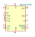
BQ24072RGT | Description: USB-Friendly Li-Ion Battery Charger and Power-Path Management, VQFN-16
Keys: USB Charge
Datasheet: http://www.ti.com/lit/ds/symlink/bq24072.pdf |
BQ24073RGT | Description: USB-Friendly Li-Ion Battery Charger and Power-Path Management, VQFN-16
Keys: USB Charge
Datasheet: http://www.ti.com/lit/ds/symlink/bq24073.pdf |
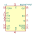
BQ24074RGT | Description: USB-Friendly Li-Ion Battery Charger and Power-Path Management, VQFN-16
Keys: USB Charge
Datasheet: http://www.ti.com/lit/ds/symlink/bq24074.pdf |
BQ24075RGT | Description: USB-Friendly Li-Ion Battery Charger and Power-Path Management, VQFN-16
Keys: USB Charge
Datasheet: http://www.ti.com/lit/ds/symlink/bq24075.pdf |
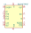
BQ24079RGT | Description: USB-Friendly Li-Ion Battery Charger and Power-Path Management, VQFN-16
Keys: USB Charge
Datasheet: http://www.ti.com/lit/ds/symlink/bq24079.pdf |
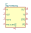
BQ24090DGQ | Description: 1A, Single-Input, SingleCell Li-Ion and Li-Pol BatteryCharger, HVSSOP-10
Keys: battery charger singlecell li-ion li-poly, 1A
Datasheet: http://www.ti.com/lit/ds/symlink/bq24090.pdf |
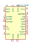
BQ24133RGY | Description: Synchronous switched mode Li-Ion and Li-Polymer battery charger, integrated MOSFETs and power path selector, Texas R-PVQFN-N24
Keys: Battery, Charger, Li-Ion, Li-Poly
Datasheet: http://www.ti.com/lit/ds/symlink/bq24133.pdf |
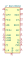
BQ24166RGE | Description: High efficiency switched mode Li-Ion and Li-Polymer battery charger, integrated MOSFETs, power path selector and standard temperature sensing, Texas R-RGE0024H
Keys: Battery, Charger, Li-Ion, Li-Poly
Datasheet: https://www.ti.com/lit/ds/symlink/bq24166.pdf |
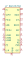
BQ24167RGE | Description: High efficiency switched mode Li-Ion and Li-Polymer battery charger, integrated MOSFETs, power path selector and JEITA compatible temperature sensing, Texas R-RGE0024H
Keys: Battery, Charger, Li-Ion, Li-Poly
Datasheet: https://www.ti.com/lit/ds/symlink/bq24166.pdf |
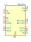
BQ2501x | Description: 500mA Li-Ion Charger w/Integrated 150mA Synchronous Buck Converter, QFN-14
Keys: Li-ion buck
Datasheet: http://www.ti.com/lit/ds/symlink/bq25010.pdf |
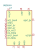
BQ25504 | Description: Energy Harvesting Boost Converter with Battery Management, VQFN-16
Keys: energy harvesting li-ion battery solar TEG
Datasheet: http://www.ti.com/lit/ds/symlink/bq25504.pdf |
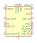
BQ25570 | Description: Nano Power Boost Charger and Buck Converter for Energy Harvester Powered Applications, QFN-20
Keys: harvester solar TEG charger li-on buck
Datasheet: http://www.ti.com/lit/ds/symlink/bq25570.pdf |
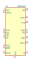
BQ25601 | Description: I2C Controlled 3A Single-Cell Battery Charger for High Input Voltage and Narrow Voltage DC Power Path Management, WQFN-32
Keys: LiPO charger
Datasheet: http://www.ti.com/lit/ds/symlink/bq25601.pdf |
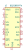
BQ25895RTW | Description: Controlled Single Cell 5A Fast Charger with MaxCharge, WQFN-24
Keys: Battery Charger and Power Path Management
Datasheet: http://www.ti.com/lit/ds/symlink/bq25895.pdf |
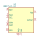
BQ27441-G1 | Description: System Side Li Ion/Polymer Fuel Gauge, PDSON-12
Keys: Fuel Gauge
Datasheet: http://www.ti.com/lit/ds/symlink/bq27441-g1.pdf |
BQ27441DRZR-G1A | Description: System Side Li Ion/Polymer Fuel Gauge, 4.2V, PDSON-12
Keys: Fuel Gauge
Datasheet: http://www.ti.com/lit/ds/symlink/bq27441-g1.pdf |
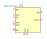
BQ27441DRZR-G1B | Description: System Side Li Ion/Polymer Fuel Gauge, 4.30-4.35V, PDSON-12
Keys: Fuel Gauge
Datasheet: http://www.ti.com/lit/ds/symlink/bq27441-g1.pdf |
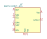
BQ27441DRZT-G1A | Description: System Side Li Ion/Polymer Fuel Gauge, 4.2V, PDSON-12
Keys: Fuel Gauge
Datasheet: http://www.ti.com/lit/ds/symlink/bq27441-g1.pdf |
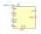
BQ27441DRZT-G1B | Description: System Side Li Ion/Polymer Fuel Gauge, 4.30-4.35V, PDSON-12
Keys: Fuel Gauge
Datasheet: http://www.ti.com/lit/ds/symlink/bq27441-g1.pdf |
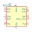
BQ27750 | Description: System Side Li Ion/Polymer Fuel Gauge, VSON-12
Keys: Fuel Gauge
Datasheet: http://www.ti.com/lit/ds/symlink/bq27750.pdf |
BQ297xy | Description: Voltage and Current Protection for Single-Cell Li-Ion and Li-Polymer Batteries
Keys: protection Li-Ion Li-Pol
Datasheet: http://www.ti.com/lit/ds/symlink/bq2970.pdf |
BQ51050BRHL | Description: Qi v1.2, Wireless Power Receiver and Battery Charger, Vout 4.2V, VQFN-20
Keys: Qi Wireless Power Receiver Battery Charger 4.2V
Datasheet: http://www.ti.com/lit/ds/symlink/bq51050b.pdf |
BQ51050BYFP | Description: Qi v1.2, Wireless Power Receiver and Battery Charger, Vout 4.2V, DSBGA-28
Keys: Qi Wireless Power Receiver Battery Charger 4.2V
Datasheet: http://www.ti.com/lit/ds/symlink/bq51050b.pdf |
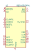
BQ51051BRHL | Description: Qi v1.2, Wireless Power Receiver and Battery Charger, Vout 4.35V, VQFN-20
Keys: Qi Wireless Power Receiver Battery Charger 4.35V
Datasheet: http://www.ti.com/lit/ds/symlink/bq51051b.pdf |
BQ51051BYFP | Description: Qi v1.2, Wireless Power Receiver and Battery Charger, Vout 4.35V, DSBGA-28
Keys: Qi Wireless Power Receiver Battery Charger 4.35V
Datasheet: http://www.ti.com/lit/ds/symlink/bq51051b.pdf |
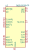
BQ51052BYFP | Description: Qi v1.2, Wireless Power Receiver and Battery Charger, Vout 4.40V, DSBGA-28
Keys: Qi Wireless Power Receiver Battery Charger 4.40V
Datasheet: http://www.ti.com/lit/ds/symlink/bq51052b.pdf |
BQ76200PW | Description: High Voltage Battery Pack Front-End Charge/Discharge High-Side NFET Driver, TSSOP-16
Keys: Battery Pack Charge/Discharge High-Side
Datasheet: http://www.ti.com/lit/ds/symlink/bq76200.pdf |
BQ76920PW | Description: Lithium battery monitor, 3-5 cells, integrated balancing, I2C interface, TSSOP-20
Keys: lithium battery balance charge afe
Datasheet: http://www.ti.com/lit/ds/symlink/bq76920.pdf |
BQ76930DBT | Description: Lithium battery monitor, 6-10 cells, integrated balancing, I2C interface, TSSOP-30
Keys: lithium battery balance charge afe
Datasheet: http://www.ti.com/lit/ds/symlink/bq76930.pdf |
BQ76940DBT | Description: Lithium battery monitor, 9-15 cells, integrated balancing, I2C interface, TSSOP-44
Keys: lithium battery balance charge afe
Datasheet: http://www.ti.com/lit/ds/symlink/bq76940.pdf |
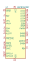
BQ78350DBT | Description: Lithium battery fuel gauge, battery management controller for BQ769x0, TSSOP-30
Keys: battery, management, Li-Ion, Gauge, controller
Datasheet: http://www.ti.com/lit/ds/symlink/bq78350.pdf |
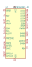
BQ78350DBT-R1 | Description: Lithium battery fuel gauge, battery management controller for BQ769x0, TSSOP-30
Keys: battery, management, Li-Ion, gauge, controller
Datasheet: http://www.ti.com/lit/ds/symlink/bq78350-r1.pdf |
DS2745U | Description: Current-flow, voltage and temperature measurement to support batterycapacity monitoring, 2.5V to 4.5V VDD, -40 to +85 degree Celcius, TSSOP-8
Keys: Current-flow, voltage and temperature measurement to support batterycapacity monitoring, 2.5V to 4.5V VDD, -40 to +85 degree Celcius, TSSOP-8
Datasheet: https://datasheets.maximintegrated.com/en/ds/DS2745.pdf |
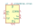
LC709203FQH-01TWG | Description: Single LiPo battery fuel gauge, I2C, type 01, WDFN-8
Keys: Battery gauge I2C
Datasheet: https://www.onsemi.com/pub/Collateral/LC709203F-D.PDF |
LC709203FQH-02TWG | Description: Single LiPo battery fuel gauge, I2C, type 02, WDFN-8
Keys: Battery gauge I2C
Datasheet: https://www.onsemi.com/pub/Collateral/LC709203F-D.PDF |
LC709203FQH-03TWG | Description: Single LiPo battery fuel gauge, I2C, type 03, WDFN-8
Keys: Battery gauge I2C
Datasheet: https://www.onsemi.com/pub/Collateral/LC709203F-D.PDF |
LC709203FQH-04TWG | Description: Single LiPo battery fuel gauge, I2C, type 04, WDFN-8
Keys: Battery gauge I2C
Datasheet: https://www.onsemi.com/pub/Collateral/LC709203F-D.PDF |
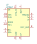
LP3947 | Description: Single Cell Li-Ion LDO Battery Charger IC, Up to 1A, Support USB charging scheme
Keys: li-ion battery charger usb
Datasheet: http://www.ti.com/lit/ds/symlink/lp3947.pdf |
LT3652EDD | Description: Step-down battery charger, Lithium Phosphate ( LiFePO4), Lead (Pb), Lithium+ (Li+) , 4.95V to 32V VDD, -40 to +125 degree Celcius, DFN-12
Keys: Step-down battery charger, Lithium Phosphate ( LiFePO4), Lead (Pb), Lithium+ (Li+) , 4.95V to 32V VDD, -40 to +125 degree Celcius, DFN-12
Datasheet: https://www.analog.com/media/en/technical-documentation/data-sheets/3652fe.pdf |
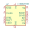
LT3652EMSE | Description: Step-down battery charger, Lithium Phosphate ( LiFePO4), Lead (Pb), Lithium+ (Li+) , 4.95V to 32V VDD, -40 to +125 degree Celcius, MSOP-12
Keys: Step-down battery charger, Lithium Phosphate ( LiFePO4), Lead (Pb), Lithium+ (Li+) , 4.95V to 32V VDD, -40 to +125 degree Celcius, MSOP-12
Datasheet: https://www.analog.com/media/en/technical-documentation/data-sheets/3652fe.pdf |
LT3652IDD | Description: Step-down battery charger, Lithium Phosphate ( LiFePO4), Lead (Pb), Lithium+ (Li+) , 4.95V to 32V VDD, -40 to +125 degree Celcius, DFN-12
Keys: Step-down battery charger, Lithium Phosphate ( LiFePO4), Lead (Pb), Lithium+ (Li+) , 4.95V to 32V VDD, -40 to +125 degree Celcius, DFN-12
Datasheet: https://www.analog.com/media/en/technical-documentation/data-sheets/3652fe.pdf |
LT3652IMSE | Description: Step-down battery charger, Lithium Phosphate ( LiFePO4), Lead (Pb), Lithium+ (Li+) , 4.95V to 32V VDD, -40 to +125 degree Celcius, MSOP-12
Keys: Step-down battery charger, Lithium Phosphate ( LiFePO4), Lead (Pb), Lithium+ (Li+) , 4.95V to 32V VDD, -40 to +125 degree Celcius, MSOP-12
Datasheet: https://www.analog.com/media/en/technical-documentation/data-sheets/3652fe.pdf |
LTC2942 | Description: Battery Gas Gauge with Temperature, Voltage Measurement, DFN-6
Keys: Fuel gauge coulomb counter I2C
Datasheet: https://www.analog.com/media/en/technical-documentation/data-sheets/2942fa.pdf |
LTC2942-1 | Description: 1A Battery Gas Gauge with Internal Sense Resistor and Temperature/Voltage Measurement, DFN-6
Keys: Fuel gauge coulomb counter I2C
Datasheet: https://www.analog.com/media/en/technical-documentation/data-sheets/29421f.pdf |
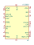
LTC3553 | Description: Micropower USB Power Manager With Li-Ion Charger, LDO and Buck Regulator, 4.2V float, QFN-20
Keys: USB PMIC
Datasheet: https://www.analog.com/media/en/technical-documentation/data-sheets/3553fc.pdf |
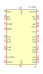
LTC3555 | Description: High Efficiency USB Power Manager + Triple Step-Down DC/DC, 4.2V float, QFN-28
Keys: USB PMIC
Datasheet: https://www.analog.com/media/en/technical-documentation/data-sheets/3555fe.pdf |
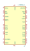
LTC3555-1 | Description: High Efficiency USB Power Manager + Triple Step-Down DC/DC, instant-on power, 4.2V float, QFN-28
Keys: USB PMIC
Datasheet: https://www.analog.com/media/en/technical-documentation/data-sheets/3555fe.pdf |
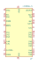
LTC3555-3 | Description: High Efficiency USB Power Manager + Triple Step-Down DC/DC, instant-on power, 4.1V float, QFN-28
Keys: USB PMIC
Datasheet: https://www.analog.com/media/en/technical-documentation/data-sheets/3555fe.pdf |
LTC4001 | Description: Single cell (4.2V) programmable synchronous buck Li-Ion charger, 2A, 5.5V input
Keys: Li-Ion charger
Datasheet: https://www.analog.com/media/en/technical-documentation/data-sheets/4001f.pdf |
LTC4001-1 | Description: Single cell (4.1V) programmable synchronous buck Li-Ion charger, 2A, 5.5V input
Keys: Li-Ion Charger
Datasheet: https://www.analog.com/media/en/technical-documentation/data-sheets/40011fa.pdf |
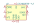
LTC4002EDD-4.2 | Description: Standalone Li-Ion Switch Mode Battery Charger, 4.7-22V input, single cell, DFN-10
Keys: lithium li-ion battery charger
Datasheet: https://www.analog.com/media/en/technical-documentation/data-sheets/4002f.pdf |
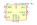
LTC4002EDD-8.4 | Description: Standalone Li-Ion Switch Mode Battery Charger, 8.9-22V input, double cell, DFN-10
Keys: lithium li-ion battery charger
Datasheet: https://www.analog.com/media/en/technical-documentation/data-sheets/4002f.pdf |
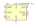
LTC4002ES8-4.2 | Description: Standalone Li-Ion Switch Mode Battery Charger, 4.7-22V input, single cell, SOIC-8
Keys: lithium li-ion battery charger
Datasheet: https://www.analog.com/media/en/technical-documentation/data-sheets/4002f.pdf |
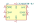
LTC4002ES8-8.4 | Description: Standalone Li-Ion Switch Mode Battery Charger, 8.9-22V input, double cell, SOIC-8
Keys: lithium li-ion battery charger
Datasheet: https://www.analog.com/media/en/technical-documentation/data-sheets/4002f.pdf |
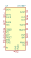
LTC4007 | Description: 4A high efficiency standalone Li-ion battery charger, SSOP24
Keys: lithium ion polymer li-po battery
Datasheet: https://www.analog.com/media/en/technical-documentation/data-sheets/4007fc.pdf |
LTC4054ES5-4.2 | Description: Constant-current/constant-voltage linear charger for single cell lithium-ion batteries with 2.9V Trickle Charge, 4.5V to 6.5V VDD, -40 to +85 degree Celcius, TSOT-23-5
Keys: Constant-current constant-voltage linear charger single cell lithium-ion battery
Datasheet: https://www.analog.com/media/en/technical-documentation/data-sheets/405442xf.pdf |
LTC4054XES5-4.2 | Description: Constant-current/constant-voltage linear charger for single cell lithium-ion batteries no Trickle Charge, 4.5V to 6.5V VDD, -40 to +85 degree Celcius, TSOT-23-5
Keys: Constant-current constant-voltage linear charger single cell lithium-ion battery
Datasheet: https://www.analog.com/media/en/technical-documentation/data-sheets/405442xf.pdf |
LTC4055 | Description: USB Power Controller and Li-Ion Charger (4.2V Float Voltage)
Keys: charger PMIC Liion USB
Datasheet: https://www.analog.com/media/en/technical-documentation/data-sheets/4055fb.pdf |
LTC4055-1 | Description: USB Power Controller and Li-Ion Charger (4.1V Float Voltage)
Keys: charger PMIC Liion USB
Datasheet: https://www.analog.com/media/en/technical-documentation/data-sheets/4055fb.pdf |
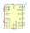
LTC4060EDHC | Description: Complete fast charging system for 2, 3 or 4 series NiMH or NiCd batteries, 0.4 to 2A, 4.5 to 10V VDD, -40 to +85 degree Celcisus, DFN-16
Keys: Complete fast charging system for 2, 3 or 4 series NiMH or NiCd batteries, 0.4 to 2A, 4.5 to 10V VDD, -40 to +85 degree Celcisus, DFN-16
Datasheet: https://www.analog.com/media/en/technical-documentation/data-sheets/405442xf.pdf |
LTC4060EFE | Description: Complete fast charging system for 2, 3 or 4 series NiMH or NiCd batteries, 0.4 to 2A, 4.5 to 10V VDD, -40 to +85 degree Celcisus, TSSOP-16
Keys: Complete fast charging system for 2, 3 or 4 series NiMH or NiCd batteries, 0.4 to 2A, 4.5 to 10V VDD, -40 to +85 degree Celcisus, TSSOP-16
Datasheet: https://www.analog.com/media/en/technical-documentation/data-sheets/405442xf.pdf |
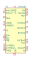
LTC4156 | Description: Dual-Input Power Manager / 3.5A LiFePO4 Battery Charger with I2C Control and USB OTG, QFN-28
Keys: lifepo charger PMIC USB
Datasheet: https://www.analog.com/media/en/technical-documentation/data-sheets/4156fa.pdf |
LTC6803-2 | Description: Multicell Battery Stack Monitor, 12-cell max, multi-chemistry, integrated balancing, stackable, serial interface
Keys: battery balance afe
Datasheet: https://www.analog.com/media/en/technical-documentation/data-sheets/680324fa.pdf |
LTC6803-4 | Description: Multicell Battery Stack Monitor, 12-cell max, multi-chemistry, integrated balancing, stackable, serial interface
Keys: battery balance afe
Datasheet: https://www.analog.com/media/en/technical-documentation/data-sheets/680324fa.pdf |
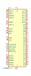
LTC6804-1 | Description: Multicell Battery Stack Monitor, 12-cell max, multi-chemistry, integrated balancing, stackable, serial interface, SSOP-48
Keys: battery balance afe
Datasheet: https://www.analog.com/media/en/technical-documentation/data-sheets/680412fc.pdf |
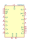
MAX1647 | Description: Smart Battery Charger, 18V battery, 28V input, SMBus serial interface
Keys: battery charger
Datasheet: https://datasheets.maximintegrated.com/en/ds/MAX1647-MAX1648.pdf |
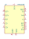
MAX1648 | Description: Smart Battery Charger, 18V battery, 28V input, standalone
Keys: battery charger
Datasheet: https://datasheets.maximintegrated.com/en/ds/MAX1647-MAX1648.pdf |
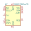
MAX17261xxTD | Description: 5.1A Multi-Cell Fuel Gauge with ModelGauge m5 EZ, TDFN-14
Keys: Charge pump, battery
Datasheet: https://datasheets.maximintegrated.com/en/ds/MAX17261.pdf |
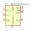
MAX17261xxWL | Description: 5.1A Multi-Cell Fuel Gauge with ModelGauge m5 EZ, WLP-9
Keys: Charge pump, battery
Datasheet: https://datasheets.maximintegrated.com/en/ds/MAX17261.pdf |
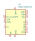
MAX17263xxTE | Description: Single/Multi-Cell Fuel Gauge, ModelGauge m5 EZ, Integrated LED Control, TDFN-14
Keys: fuel-gauge
Datasheet: https://datasheets.maximintegrated.com/en/ds/MAX17263.pdf |
MAX1811 | Description: USB Powered Li+ Charger, 4.1V/4.2V battery, 5V input, 0.1/0.5A charging current
Keys: USB Battery Charger
Datasheet: https://datasheets.maximintegrated.com/en/ds/MAX1811.pdf |
MAX1873REEE | Description: Charger for 2 lithium-ion (Li+), 5/6 NickelCadium (NiCD) cells or 5/6 NickelMetalHydride (NiMH), 9 to 28V VDD, -40 to +85 degree Celcius, QSOP-16
Keys: Charger for 2 lithium-ion (Li+), 5/6 NickelCadium (NiCD) cells or 5/6 NickelMetalHydride (NiMH), 9 to 28V VDD, -40 to +85 degree Celcius, QSOP-16
Datasheet: https://datasheets.maximintegrated.com/en/ds/MAX1873.pdf |
MAX1873SEEE | Description: Charger for 3 lithium-ion (Li+), 7/9 NickelCadium (NiCD) cells or 7/9 NickelMetalHydride (NiMH), 9 to 28V VDD, -40 to +85 degree Celcius, QSOP-16
Keys: Charger for 3 lithium-ion (Li+), 7/9 NickelCadium (NiCD) cells or 7/9 NickelMetalHydride (NiMH), 9 to 28V VDD, -40 to +85 degree Celcius, QSOP-16
Datasheet: https://datasheets.maximintegrated.com/en/ds/MAX1873.pdf |
MAX1873TEEE | Description: Charger for 4 lithium-ion (Li+), 10 NickelCadium (NiCD) cells or 10 NickelMetalHydride (NiMH), 9 to 28V VDD, -40 to +85 degree Celcius, QSOP-16
Keys: Charger for 4 lithium-ion (Li+), 10 NickelCadium (NiCD) cells or 10 NickelMetalHydride (NiMH), 9 to 28V VDD, -40 to +85 degree Celcius, QSOP-16
Datasheet: https://datasheets.maximintegrated.com/en/ds/MAX1873.pdf |
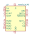
MAX712CPE | Description: Fast-charge Nickel Metal Hydride (NiMH) from a DC source, 0 to +70 Degree Celcius, PDIP-16
Keys: Fast-charge Nickel Metal Hydride (NiMH) from a DC source, 0 to +70 Degree Celcius, PDIP-16
Datasheet: https://datasheets.maximintegrated.com/en/ds/MAX712-MAX713.pdf |
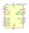
MAX712CSE | Description: Fast-charge Nickel Metal Hydride (NiMH) from a DC source, 0 to +70 Degree Celcius, SOIC-16
Keys: Fast-charge Nickel Metal Hydride (NiMH) from a DC source, 0 to +70 Degree Celcius, SOIC-16
Datasheet: https://datasheets.maximintegrated.com/en/ds/MAX712-MAX713.pdf |
MAX712EPE | Description: Fast-charge Nickel Metal Hydride (NiMH) from a DC source, -40 to +85 Degree Celcius, PDIP-16
Keys: Fast-charge Nickel Metal Hydride (NiMH) from a DC source, -40 to +85 Degree Celcius, PDIP-16
Datasheet: https://datasheets.maximintegrated.com/en/ds/MAX712-MAX713.pdf |
MAX712ESE | Description: Fast-charge Nickel Metal Hydride (NiMH) from a DC source, -40 to +85 Degree Celcius, SOIC-16
Keys: Fast-charge Nickel Metal Hydride (NiMH) from a DC source, -40 to +85 Degree Celcius, SOIC-16
Datasheet: https://datasheets.maximintegrated.com/en/ds/MAX712-MAX713.pdf |
MAX712MJE | Description: Fast-charge Nickel Metal Hydride (NiMH) from a DC source, ceramic, -55 to +125 Degree Celcius, PDIP-16
Keys: Fast-charge Nickel Metal Hydride (NiMH) from a DC source, ceramic, -55 to +125 Degree Celcius, PDIP-16
Datasheet: https://datasheets.maximintegrated.com/en/ds/MAX712-MAX713.pdf |
MAX713CPE | Description: Fast-charge Nickel Cadmium (NiCd) from a DC source, 0 to +70 Degree Celcius, PDIP-16
Keys: Fast-charge Nickel Cadmium (NiCd) from a DC source, 0 to +70 Degree Celcius, PDIP-16
Datasheet: https://datasheets.maximintegrated.com/en/ds/MAX712-MAX713.pdf |
MAX713CSE | Description: Fast-charge Nickel Cadmium (NiCd) from a DC source, 0 to +70 Degree Celcius, SOIC-16
Keys: Fast-charge Nickel Cadmium (NiCd) from a DC source, 0 to +70 Degree Celcius, SOIC-16
Datasheet: https://datasheets.maximintegrated.com/en/ds/MAX712-MAX713.pdf |
MAX713EPE | Description: Fast-charge Nickel Cadmium (NiCd) from a DC source, -40 to +85 Degree Celcius, PDIP-16
Keys: Fast-charge Nickel Cadmium (NiCd) from a DC source, -40 to +85 Degree Celcius, PDIP-16
Datasheet: https://datasheets.maximintegrated.com/en/ds/MAX712-MAX713.pdf |
MAX713ESE | Description: Fast-charge Nickel Cadmium (NiCd) from a DC source, -40 to +85 Degree Celcius, SOIC-16
Keys: Fast-charge Nickel Cadmium (NiCd) from a DC source, -40 to +85 Degree Celcius, SOIC-16
Datasheet: https://datasheets.maximintegrated.com/en/ds/MAX712-MAX713.pdf |
MAX713MJE | Description: Fast-charge Nickel Cadmium (NiCd) from a DC source, ceramic, -55 to +125 Degree Celcius, PDIP-16
Keys: Fast-charge Nickel Cadmium (NiCd) from a DC source, ceramic, -55 to +125 Degree Celcius, PDIP-16
Datasheet: https://datasheets.maximintegrated.com/en/ds/MAX712-MAX713.pdf |
MC34673 | Description: High Input Voltage 1.2A Charger for Single-cell Li-Ion Batteries, UDFN-8
Keys: Lithium-Ion Battery Charger
Datasheet: http://www.nxp.com/docs/en/data-sheet/MC34673.pdf |
MCP73811T-420I-OT | Description: Simple, Miniature Single-Cell, Fully Integrated Li-Ion / Li-Polymer Charge Management Controllers, 85mA/450mA, 4.2V, SOT23-5
Keys: Lithium-Ion Battery Charger
Datasheet: http://ww1.microchip.com/downloads/en/DeviceDoc/22036b.pdf |
MCP73811T-435I-OT | Description: Simple, Miniature Single-Cell, Fully Integrated Li-Ion / Li-Polymer Charge Management Controllers, 85mA/450mA, 4.35V, SOT23-5
Keys: Lithium-Ion Battery Charger
Datasheet: http://ww1.microchip.com/downloads/en/DeviceDoc/22036b.pdf |
MCP73812T-420I-OT | Description: Simple, Miniature Single-Cell, Fully Integrated Li-Ion / Li-Polymer Charge Management Controllers, 50mA-500mA, 4.2V, SOT23-5
Keys: Lithium-Ion Battery Charger
Datasheet: http://ww1.microchip.com/downloads/en/DeviceDoc/22036b.pdf |
MCP73812T-435I-OT | Description: Simple, Miniature Single-Cell, Fully Integrated Li-Ion / Li-Polymer Charge Management Controllers, 50mA-500mA, 4.35V, SOT23-5
Keys: Lithium-Ion Battery Charger
Datasheet: http://ww1.microchip.com/downloads/en/DeviceDoc/22036b.pdf |
MCP73831-2-OT | Description: Single cell, Li-Ion/Li-Po charge management controller, 4.20V, Tri-State Status Output, in SOT23-5 package
Keys: battery charger lithium
Datasheet: http://ww1.microchip.com/downloads/en/DeviceDoc/20001984g.pdf |
MCP73831-3-OT | Description: Single cell, Li-Ion/Li-Po charge management controller, 4.35V, Tri-State Status Output, in SOT23-5 package
Keys: battery charger lithium
Datasheet: http://ww1.microchip.com/downloads/en/DeviceDoc/20001984g.pdf |
MCP73831-4-OT | Description: Single cell, Li-Ion/Li-Po charge management controller, 4.40V, Tri-State Status Output, in SOT23-5 package
Keys: battery charger lithium
Datasheet: http://ww1.microchip.com/downloads/en/DeviceDoc/20001984g.pdf |
MCP73831-5-OT | Description: Single cell, Li-Ion/Li-Po charge management controller, 4.50V, Tri-State Status Output, in SOT23-5 package
Keys: battery charger lithium
Datasheet: http://ww1.microchip.com/downloads/en/DeviceDoc/20001984g.pdf |
MCP73832-2-OT | Description: Single cell, Li-Ion/Li-Po charge management controller, 4.20V, Open-Drain Status Output, in SOT23-5 package
Keys: battery charger lithium
Datasheet: http://ww1.microchip.com/downloads/en/DeviceDoc/20001984g.pdf |
MCP73832-3-OT | Description: Single cell, Li-Ion/Li-Po charge management controller, 4.35V, Open-Drain Status Output, in SOT23-5 package
Keys: battery charger lithium
Datasheet: http://ww1.microchip.com/downloads/en/DeviceDoc/20001984g.pdf |
MCP73832-4-OT | Description: Single cell, Li-Ion/Li-Po charge management controller, 4.40V, Open-Drain Status Output, in SOT23-5 package
Keys: battery charger lithium
Datasheet: http://ww1.microchip.com/downloads/en/DeviceDoc/20001984g.pdf |
MCP73832-5-OT | Description: Single cell, Li-Ion/Li-Po charge management controller, 4.50V, Open-Drain Status Output, in SOT23-5 package
Keys: battery charger lithium
Datasheet: http://ww1.microchip.com/downloads/en/DeviceDoc/20001984g.pdf |
MCP73871 | Description: Single cell, Li-Ion/Li-Po charge management controller
Keys: battery charger lithium
Datasheet: http://www.mouser.com/ds/2/268/22090a-52174.pdf |
MCP73871-1AA | Description: Single cell, Li-Ion/Li-Po charge management controller, 4.10V
Keys: battery charger lithium
Datasheet: http://www.mouser.com/ds/2/268/22090a-52174.pdf |
MCP73871-1CA | Description: Single cell, Li-Ion/Li-Po charge management controller, 4.10V, 6h safety timer
Keys: battery charger lithium
Datasheet: http://www.mouser.com/ds/2/268/22090a-52174.pdf |
MCP73871-1CC | Description: Single cell, Li-Ion/Li-Po charge management controller, 4.10V, 6h safety timer, 3.1V LBO threshold
Keys: battery charger lithium
Datasheet: http://www.mouser.com/ds/2/268/22090a-52174.pdf |
MCP73871-2AA | Description: Single cell, Li-Ion/Li-Po charge management controller, 4.20V
Keys: battery charger lithium
Datasheet: http://www.mouser.com/ds/2/268/22090a-52174.pdf |
MCP73871-2CA | Description: Single cell, Li-Ion/Li-Po charge management controller, 4.20V, 6h safety timer
Keys: battery charger lithium
Datasheet: http://www.mouser.com/ds/2/268/22090a-52174.pdf |
MCP73871-2CC | Description: Single cell, Li-Ion/Li-Po charge management controller, 4.20V, 6h safety timer, 3.1V LBO threshold
Keys: battery charger lithium
Datasheet: http://www.mouser.com/ds/2/268/22090a-52174.pdf |
MCP73871-3CA | Description: Single cell, Li-Ion/Li-Po charge management controller, 4.35V, 6h safety timer
Keys: battery charger lithium
Datasheet: http://www.mouser.com/ds/2/268/22090a-52174.pdf |
MCP73871-3CC | Description: Single cell, Li-Ion/Li-Po charge management controller, 4.35V, 6h safety timer, 3.1V LBO threshold
Keys: battery charger lithium
Datasheet: http://www.mouser.com/ds/2/268/22090a-52174.pdf |
MCP73871-4CA | Description: Single cell, Li-Ion/Li-Po charge management controller, 4.40V, 6h safety timer
Keys: battery charger lithium
Datasheet: http://www.mouser.com/ds/2/268/22090a-52174.pdf |
MCP73871-4CC | Description: Single cell, Li-Ion/Li-Po charge management controller, 4.40V, 6h safety timer, 3.1V LBO threshold
Keys: battery charger lithium
Datasheet: http://www.mouser.com/ds/2/268/22090a-52174.pdf |